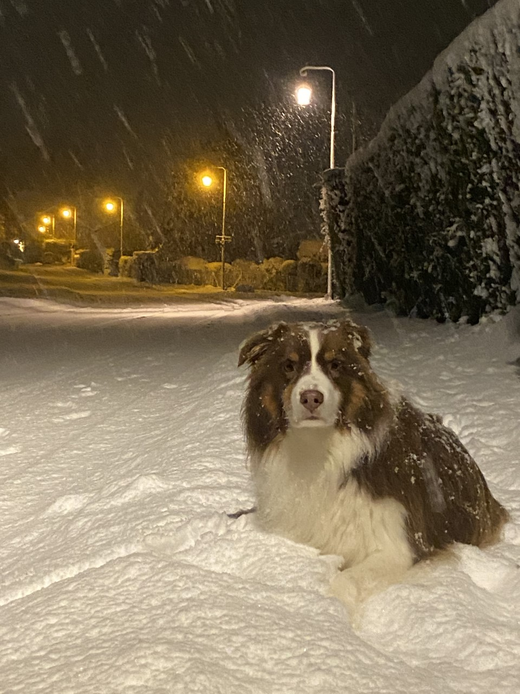
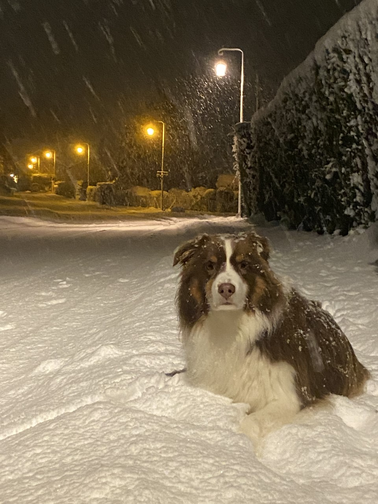

My name is Alexander Goriup, but most of the time I go by Alec. I have two older sisters, I am 21 years old and I am an interntional student at Quinnipiac University. I was born in raised in Geneva, Switzerland. My mom grew up in the Unites States. She taught me english and the public Swiss school system taught me french. Hence why I am fluent in both languages.
My interest in my major started when I took my first introductory course to computer science in highschool, using Python and giving Tracy the Turtle different directions. I really liked the idea of ethical hacking, and being able to accomplish certain task with the help of a computer. Needless to say I loved my first computer science class and completed a year's worth of work in half the time. Now I am a sophmore and I'm searching for internship positions to gain some office experience related to my major. I've played the saxophone for 8 years and still love playing it when I can. I used to be a Scout leader back in Switzerland, which gave me a lot of experience working in teams, management, and organization. Below is a picture of Teddy.

 
